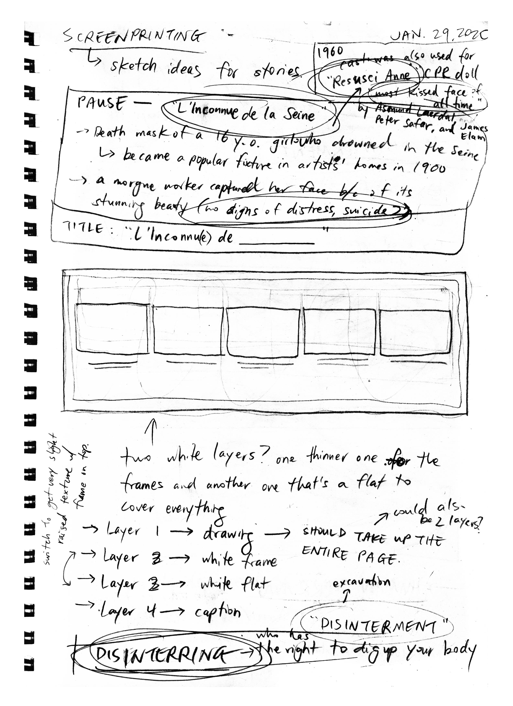
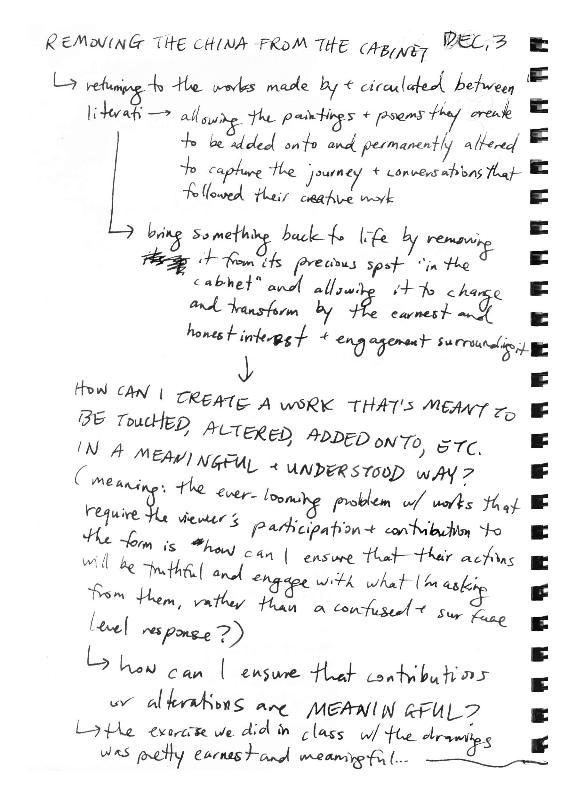
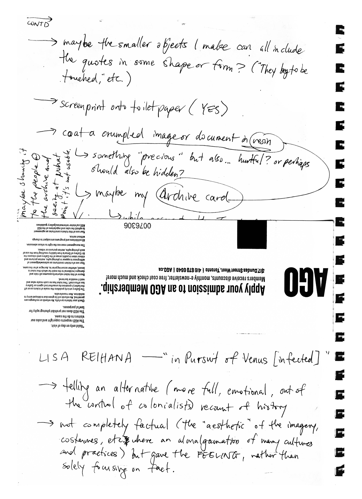
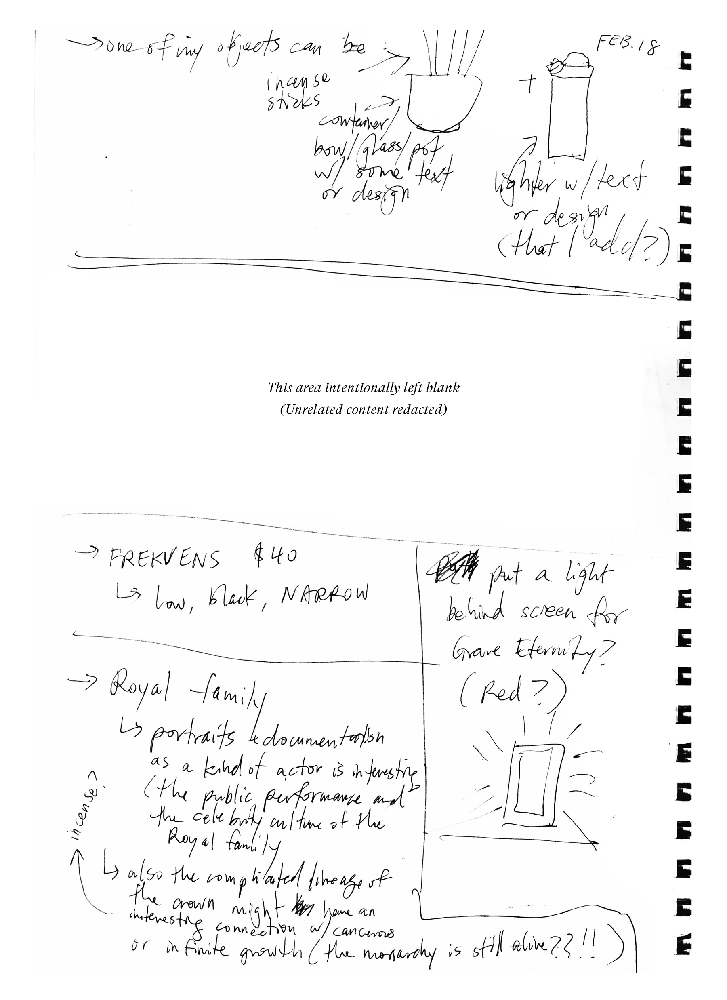

Section 02—Databases
“Grave Eternity”, participant contributions (notes and illustrations)
“Grave Eternity”, installation (printed images)

Section 03—Re-chantment/Disenchantment
“Essentially Anonymous”, final books (printed image)
Section 04—Taking Power

Note 077—Notes on Regarding the Pain of Others (part 1). (1/7)
Note 078—Notes on Regarding the Pain of Others (part 1). (2/7)
Note 079—Notes on Regarding the Pain of Others (part 1). (3/7)
Note 080—Notes on Regarding the Pain of Others (part 1). (4/7)
Note 081—Notes on Regarding the Pain of Others (part 1). (5/7)
Note 082—Notes on Regarding the Pain of Others (part 1). (6/7)
Note 083—Notes on Regarding the Pain of Others (part 1). (7/7) + Brainstorming ideas and outcomes.
Note 084—Captions and taxidermy + Notes on Regarding the Pain of Others (part 2). (1/4)
Note 085—Notes on Regarding the Pain of Others (part 2). (2/4)
Note 086—Notes on Regarding the Pain of Others (part 2). (3/4)
Note 087—Notes on Regarding the Pain of Others (part 2). (4/4) + Brief thoughts from class.
Note 088—Notes on Regarding the Pain of Others (part 3). (1/2)
Note 089—Notes on Regarding the Pain of Others (part 3). (2/2)
Note 090—Notes on Regarding the Pain of Others (part 4). (1/5)
Note 091—Notes on Regarding the Pain of Others (part 4). (2/5)
Note 092—Notes on Regarding the Pain of Others (part 4). (3/5)
Note 093—Notes on Regarding the Pain of Others (part 4). (4/5)
Note 094—Notes on Regarding the Pain of Others (part 4). (5/5)
“Exhibition”, sketched drafts

“Exhibition”, films
“Exhibition”, final print (printed images)

Lightbox, final product (printed image)

Note 095—Public photography and new year goals.
Note 096—Proximity/Familiarity.
Note 097—Planning my first screenprint project. (1/3)
Note 098—Planning my first screenprint project. (2/3)

Note 099—Planning my first screenprint project. (3/3)
Note 100—Planning my first screenprint project (cont'd). (1/4)
Note 101—Planning my first screenprint project (cont'd). (2/4)
Note 102—Planning my first screenprint project (cont'd). (3/4)
Note 103—Planning my first screenprint project (cont'd). (4/4)
“They beg to be touched”, selected images of craft and process (printed images)

Toronto Archives access card

Visiting the Toronto Archives (printed images)

Note 104—Writing workshop. (1/2)
Note 105—Writing workshop. (2/2)
Note 106—About my gloves.
Resusci Manikin Faces (bagged)

Resusci Manikin Faces

Resusci Manikin Face, painted with one false lash glued on.
Resusci Manikin Face, painted with one false lash glued on (second angle).

Note 107—L’Inconnue de la Seine and other objects. (1/2)
Note 108—L’Inconnue de la Seine and other objects. (2/2)
Note 109—Resusci Anne Gloryhole.
Note 110—“Shall We Gather at the River” revisited and thinking about section names.

Royal family paper cut outs

Cool tape (printed image)

“Save Us All!”, final print (printed image)

“Save Us All!”, prints on shelf (printed image)

Note 111—Right to be forgotten and the Royal Family. (1/3)
Note 112—Right to be forgotten and the Royal Family. (2/3)
Note 113—Right to be forgotten and the Royal Family. (3/3) + Displaying “Saving Grace” at GradEx
Note 114—Removing the china from the cabinet. (1/3)
Note 115—Removing the china from the cabinet. (2/3)

Note 116—Removing the china from the cabinet. (3/3)

Note 117—Shrines and making art in the middle of the night. (1/3)
Note 118—Shrines and making art in the middle of the night. (2/3)
Note 119—Shrines and making art in the middle of the night. (3/3)
Note 120—Planning my shrine. (1/3)
Note 121—Planning my shrine. (2/3)

Note 122—Planning my shrine. (3/3)
Note 123—New year, new-ish stuff.
Section 05—Sorting the System
Note 124—Planning my process ‘book’. (1/5)
Note 125—Planning my process ‘book’. (2/5)
Note 126—Planning my process ‘book’. (3/5)
Note 127—Planning my process ‘book’. (4/5)

Note 128—Planning my process ‘book’. (5/5)
Note 129—Reading more on l’Inconnue. + Categorizing pain (for Rebecca). (1/2)
Note 130—Categorizing pain (for Rebecca). (2/2)
William and Kate (mug)
Harry and Meghan (plastic saucer)

Masters (oil bottle)
Souvenir from the First Communion (plaque)
Crown (paper crown)
Erhu player (mechanical doll)

Incense sticks
Ornate metal box (closed)
Ornate metal box (open)
Shell-shaped metal box (closed)
Shell-shaped box (open)
Note 131—Thinking about materials and screens.
Note 132—Displaying at GradEx. (1/2)
Note 133—Displaying at GradEx. (2/2) + Life masks/death masks
Note 134—Thinking about deliverables yet again. (1/4)

Note 135—Thinking about deliverables yet again. (2/4))
Note 136—Thinking about deliverables yet again. (3/4)
Note 137—Thinking about deliverables yet again. (4/4) + Lisa Reihana. (covered)
Note 138—Thinking about deliverables yet again. (4/4) + Lisa Reihana. (uncovered)
Note 139—Thinking about deliverables yet again (cont'd). (1/2)
Note 140—Thinking about deliverables yet again (cont'd). (2/2)
Note 141—Cabinets of Curiosities and my GradEx set up. (1/3)
Note 142—Cabinets of Curiosities and my GradEx set up. (2/3)
Note 143—Cabinets of Curiosities and my GradEx set up. (3/3)
Note 144—Thinking about my poem and cabinets again. (1/2)
Note 145—Thinking about my poem and cabinets again. (2/2)
Note 146—Thinking about my shelves and my ‘cabinet’.
Note 147—Objects for my cabinet.
“Do Not Print” (three flip books)

“Do Not Print” (three flip books) (detail)
Locket (printed images)

Note 148—Making my flip book and thinking about contemporary documentary practices. (1/2)
Note 149—Making my flip book and thinking about contemporary documentary practices. (2/2)
Note 150—Thoughts... (on religion, I guess).
Note 151—Assorted thoughts during reading week.
Note 152—Charts and brochures.
Note 153—Cole’s cool idea.